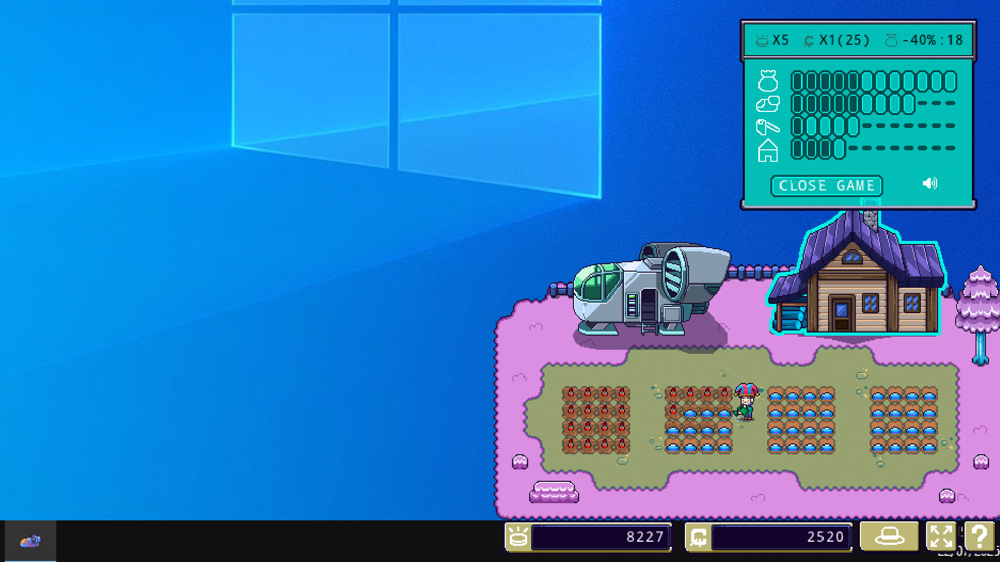

Tiny Harvest is a relaxing desktop game that runs while you work, study, or browse the internet.
Grow space plants, upgrade your crops, ship, home, and tools, and enjoy a cozy, minimalist experience designed to keep you company throughout your day.
In order to progress, this game counts your keyboard and mouse inputs to keep "playing".
Farlands: Tiny Harvest is a game developed in C with the library Raylib in 3 months.
This was my first project developing in C, and, moreover, I used Raylib, an unknown library to me. I had quite a bit of knowledge of C++, so I had to learn the main differences between these languages, that was not a real problem.
The great struggle came with Raylib. Until that time, it was an unfamiliar library, due to this, it took some time until I understood how the features I needed worked and implemented the necessary code structure and Adapters, which allowed me to display assets without the need to interact directly with the library's code.

This game was developed during my internship at JanduSoft as a spin-off of Farlands. We were only 2 people on the developing team, Eric Rodríguez as a designer and producer, and me as a developer.
But, we also received some help from the team of Farlands.
We worked with constant contact and weekly meetings, where we discussed the feasibility of each milestone and which should be the next one.
Plus, we were so well on time that we were able to implement skins.

References